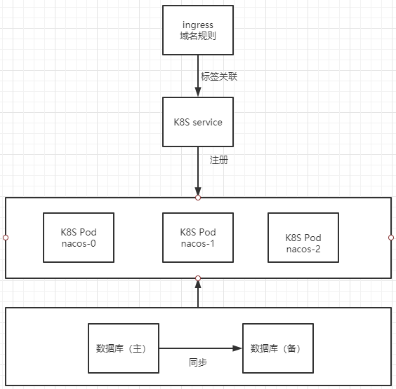

注册配置中心-Nacos
- TAGS: Linux
nacos_K8S高可用部署
本次部署采用外置数据库方式部署，集群副本数为3，使用官方文档搭建nacos集群及数据库不需要执行初始化sql语句，请参考官方文档 https://nacos.io/zh-cn/docs/quick-start.html
集群部署架构图

使用外置数据源
生产使用建议至少主备模式，或者采用高可用数据库。
初始化 MySQL 数据库
/*
* Copyright 1999-2018 Alibaba Group Holding Ltd.
*
* Licensed under the Apache License, Version 2.0 (the "License");
* you may not use this file except in compliance with the License.
* You may obtain a copy of the License at
*
* http://www.apache.org/licenses/LICENSE-2.0
*
* Unless required by applicable law or agreed to in writing, software
* distributed under the License is distributed on an "AS IS" BASIS,
* WITHOUT WARRANTIES OR CONDITIONS OF ANY KIND, either express or implied.
* See the License for the specific language governing permissions and
* limitations under the License.
*/
/******************************************/
/* 数据库全名 = nacos_config */
/* 表名称 = config_info */
/******************************************/
CREATE TABLE `config_info` (
`id` bigint(20) NOT NULL AUTO_INCREMENT COMMENT 'id',
`data_id` varchar(255) NOT NULL COMMENT 'data_id',
`group_id` varchar(255) DEFAULT NULL,
`content` longtext NOT NULL COMMENT 'content',
`md5` varchar(32) DEFAULT NULL COMMENT 'md5',
`gmt_create` datetime NOT NULL DEFAULT CURRENT_TIMESTAMP COMMENT '创建时间',
`gmt_modified` datetime NOT NULL DEFAULT CURRENT_TIMESTAMP COMMENT '修改时间',
`src_user` text COMMENT 'source user',
`src_ip` varchar(20) DEFAULT NULL COMMENT 'source ip',
`app_name` varchar(128) DEFAULT NULL,
`tenant_id` varchar(128) DEFAULT '' COMMENT '租户字段',
`c_desc` varchar(256) DEFAULT NULL,
`c_use` varchar(64) DEFAULT NULL,
`effect` varchar(64) DEFAULT NULL,
`type` varchar(64) DEFAULT NULL,
`c_schema` text,
PRIMARY KEY (`id`),
UNIQUE KEY `uk_configinfo_datagrouptenant` (`data_id`,`group_id`,`tenant_id`)
) ENGINE=InnoDB DEFAULT CHARSET=utf8 COLLATE=utf8_bin COMMENT='config_info';
/******************************************/
/* 数据库全名 = nacos_config */
/* 表名称 = config_info_aggr */
/******************************************/
CREATE TABLE `config_info_aggr` (
`id` bigint(20) NOT NULL AUTO_INCREMENT COMMENT 'id',
`data_id` varchar(255) NOT NULL COMMENT 'data_id',
`group_id` varchar(255) NOT NULL COMMENT 'group_id',
`datum_id` varchar(255) NOT NULL COMMENT 'datum_id',
`content` longtext NOT NULL COMMENT '内容',
`gmt_modified` datetime NOT NULL COMMENT '修改时间',
`app_name` varchar(128) DEFAULT NULL,
`tenant_id` varchar(128) DEFAULT '' COMMENT '租户字段',
PRIMARY KEY (`id`),
UNIQUE KEY `uk_configinfoaggr_datagrouptenantdatum` (`data_id`,`group_id`,`tenant_id`,`datum_id`)
) ENGINE=InnoDB DEFAULT CHARSET=utf8 COLLATE=utf8_bin COMMENT='增加租户字段';
/******************************************/
/* 数据库全名 = nacos_config */
/* 表名称 = config_info_beta */
/******************************************/
CREATE TABLE `config_info_beta` (
`id` bigint(20) NOT NULL AUTO_INCREMENT COMMENT 'id',
`data_id` varchar(255) NOT NULL COMMENT 'data_id',
`group_id` varchar(128) NOT NULL COMMENT 'group_id',
`app_name` varchar(128) DEFAULT NULL COMMENT 'app_name',
`content` longtext NOT NULL COMMENT 'content',
`beta_ips` varchar(1024) DEFAULT NULL COMMENT 'betaIps',
`md5` varchar(32) DEFAULT NULL COMMENT 'md5',
`gmt_create` datetime NOT NULL DEFAULT CURRENT_TIMESTAMP COMMENT '创建时间',
`gmt_modified` datetime NOT NULL DEFAULT CURRENT_TIMESTAMP COMMENT '修改时间',
`src_user` text COMMENT 'source user',
`src_ip` varchar(20) DEFAULT NULL COMMENT 'source ip',
`tenant_id` varchar(128) DEFAULT '' COMMENT '租户字段',
PRIMARY KEY (`id`),
UNIQUE KEY `uk_configinfobeta_datagrouptenant` (`data_id`,`group_id`,`tenant_id`)
) ENGINE=InnoDB DEFAULT CHARSET=utf8 COLLATE=utf8_bin COMMENT='config_info_beta';
/******************************************/
/* 数据库全名 = nacos_config */
/* 表名称 = config_info_tag */
/******************************************/
CREATE TABLE `config_info_tag` (
`id` bigint(20) NOT NULL AUTO_INCREMENT COMMENT 'id',
`data_id` varchar(255) NOT NULL COMMENT 'data_id',
`group_id` varchar(128) NOT NULL COMMENT 'group_id',
`tenant_id` varchar(128) DEFAULT '' COMMENT 'tenant_id',
`tag_id` varchar(128) NOT NULL COMMENT 'tag_id',
`app_name` varchar(128) DEFAULT NULL COMMENT 'app_name',
`content` longtext NOT NULL COMMENT 'content',
`md5` varchar(32) DEFAULT NULL COMMENT 'md5',
`gmt_create` datetime NOT NULL DEFAULT CURRENT_TIMESTAMP COMMENT '创建时间',
`gmt_modified` datetime NOT NULL DEFAULT CURRENT_TIMESTAMP COMMENT '修改时间',
`src_user` text COMMENT 'source user',
`src_ip` varchar(20) DEFAULT NULL COMMENT 'source ip',
PRIMARY KEY (`id`),
UNIQUE KEY `uk_configinfotag_datagrouptenanttag` (`data_id`,`group_id`,`tenant_id`,`tag_id`)
) ENGINE=InnoDB DEFAULT CHARSET=utf8 COLLATE=utf8_bin COMMENT='config_info_tag';
/******************************************/
/* 数据库全名 = nacos_config */
/* 表名称 = config_tags_relation */
/******************************************/
CREATE TABLE `config_tags_relation` (
`id` bigint(20) NOT NULL COMMENT 'id',
`tag_name` varchar(128) NOT NULL COMMENT 'tag_name',
`tag_type` varchar(64) DEFAULT NULL COMMENT 'tag_type',
`data_id` varchar(255) NOT NULL COMMENT 'data_id',
`group_id` varchar(128) NOT NULL COMMENT 'group_id',
`tenant_id` varchar(128) DEFAULT '' COMMENT 'tenant_id',
`nid` bigint(20) NOT NULL AUTO_INCREMENT,
PRIMARY KEY (`nid`),
UNIQUE KEY `uk_configtagrelation_configidtag` (`id`,`tag_name`,`tag_type`),
KEY `idx_tenant_id` (`tenant_id`)
) ENGINE=InnoDB DEFAULT CHARSET=utf8 COLLATE=utf8_bin COMMENT='config_tag_relation';
/******************************************/
/* 数据库全名 = nacos_config */
/* 表名称 = group_capacity */
/******************************************/
CREATE TABLE `group_capacity` (
`id` bigint(20) unsigned NOT NULL AUTO_INCREMENT COMMENT '主键ID',
`group_id` varchar(128) NOT NULL DEFAULT '' COMMENT 'Group ID，空字符表示整个集群',
`quota` int(10) unsigned NOT NULL DEFAULT '0' COMMENT '配额，0表示使用默认值',
`usage` int(10) unsigned NOT NULL DEFAULT '0' COMMENT '使用量',
`max_size` int(10) unsigned NOT NULL DEFAULT '0' COMMENT '单个配置大小上限，单位为字节，0表示使用默认值',
`max_aggr_count` int(10) unsigned NOT NULL DEFAULT '0' COMMENT '聚合子配置最大个数，，0表示使用默认值',
`max_aggr_size` int(10) unsigned NOT NULL DEFAULT '0' COMMENT '单个聚合数据的子配置大小上限，单位为字节，0表示使用默认值',
`max_history_count` int(10) unsigned NOT NULL DEFAULT '0' COMMENT '最大变更历史数量',
`gmt_create` datetime NOT NULL DEFAULT CURRENT_TIMESTAMP COMMENT '创建时间',
`gmt_modified` datetime NOT NULL DEFAULT CURRENT_TIMESTAMP COMMENT '修改时间',
PRIMARY KEY (`id`),
UNIQUE KEY `uk_group_id` (`group_id`)
) ENGINE=InnoDB DEFAULT CHARSET=utf8 COLLATE=utf8_bin COMMENT='集群、各Group容量信息表';
/******************************************/
/* 数据库全名 = nacos_config */
/* 表名称 = his_config_info */
/******************************************/
CREATE TABLE `his_config_info` (
`id` bigint(64) unsigned NOT NULL,
`nid` bigint(20) unsigned NOT NULL AUTO_INCREMENT,
`data_id` varchar(255) NOT NULL,
`group_id` varchar(128) NOT NULL,
`app_name` varchar(128) DEFAULT NULL COMMENT 'app_name',
`content` longtext NOT NULL,
`md5` varchar(32) DEFAULT NULL,
`gmt_create` datetime NOT NULL DEFAULT CURRENT_TIMESTAMP,
`gmt_modified` datetime NOT NULL DEFAULT CURRENT_TIMESTAMP,
`src_user` text,
`src_ip` varchar(20) DEFAULT NULL,
`op_type` char(10) DEFAULT NULL,
`tenant_id` varchar(128) DEFAULT '' COMMENT '租户字段',
PRIMARY KEY (`nid`),
KEY `idx_gmt_create` (`gmt_create`),
KEY `idx_gmt_modified` (`gmt_modified`),
KEY `idx_did` (`data_id`)
) ENGINE=InnoDB DEFAULT CHARSET=utf8 COLLATE=utf8_bin COMMENT='多租户改造';
/******************************************/
/* 数据库全名 = nacos_config */
/* 表名称 = tenant_capacity */
/******************************************/
CREATE TABLE `tenant_capacity` (
`id` bigint(20) unsigned NOT NULL AUTO_INCREMENT COMMENT '主键ID',
`tenant_id` varchar(128) NOT NULL DEFAULT '' COMMENT 'Tenant ID',
`quota` int(10) unsigned NOT NULL DEFAULT '0' COMMENT '配额，0表示使用默认值',
`usage` int(10) unsigned NOT NULL DEFAULT '0' COMMENT '使用量',
`max_size` int(10) unsigned NOT NULL DEFAULT '0' COMMENT '单个配置大小上限，单位为字节，0表示使用默认值',
`max_aggr_count` int(10) unsigned NOT NULL DEFAULT '0' COMMENT '聚合子配置最大个数',
`max_aggr_size` int(10) unsigned NOT NULL DEFAULT '0' COMMENT '单个聚合数据的子配置大小上限，单位为字节，0表示使用默认值',
`max_history_count` int(10) unsigned NOT NULL DEFAULT '0' COMMENT '最大变更历史数量',
`gmt_create` datetime NOT NULL DEFAULT CURRENT_TIMESTAMP COMMENT '创建时间',
`gmt_modified` datetime NOT NULL DEFAULT CURRENT_TIMESTAMP COMMENT '修改时间',
PRIMARY KEY (`id`),
UNIQUE KEY `uk_tenant_id` (`tenant_id`)
) ENGINE=InnoDB DEFAULT CHARSET=utf8 COLLATE=utf8_bin COMMENT='租户容量信息表';
CREATE TABLE `tenant_info` (
`id` bigint(20) NOT NULL AUTO_INCREMENT COMMENT 'id',
`kp` varchar(128) NOT NULL COMMENT 'kp',
`tenant_id` varchar(128) default '' COMMENT 'tenant_id',
`tenant_name` varchar(128) default '' COMMENT 'tenant_name',
`tenant_desc` varchar(256) DEFAULT NULL COMMENT 'tenant_desc',
`create_source` varchar(32) DEFAULT NULL COMMENT 'create_source',
`gmt_create` bigint(20) NOT NULL COMMENT '创建时间',
`gmt_modified` bigint(20) NOT NULL COMMENT '修改时间',
PRIMARY KEY (`id`),
UNIQUE KEY `uk_tenant_info_kptenantid` (`kp`,`tenant_id`),
KEY `idx_tenant_id` (`tenant_id`)
) ENGINE=InnoDB DEFAULT CHARSET=utf8 COLLATE=utf8_bin COMMENT='tenant_info';
CREATE TABLE `users` (
`username` varchar(50) NOT NULL PRIMARY KEY,
`password` varchar(500) NOT NULL,
`enabled` boolean NOT NULL
);
CREATE TABLE `roles` (
`username` varchar(50) NOT NULL,
`role` varchar(50) NOT NULL,
UNIQUE INDEX `idx_user_role` (`username` ASC, `role` ASC) USING BTREE
);
CREATE TABLE `permissions` (
`role` varchar(50) NOT NULL,
`resource` varchar(255) NOT NULL,
`action` varchar(8) NOT NULL,
UNIQUE INDEX `uk_role_permission` (`role`,`resource`,`action`) USING BTREE
);
INSERT INTO users (username, password, enabled) VALUES ('nacos', '$2a$10$EuWPZHzz32dJN7jexM34MOeYirDdFAZm2kuWj7VEOJhhZkDrxfvUu', TRUE);
INSERT INTO roles (username, role) VALUES ('nacos', 'ROLE_ADMIN');
部署Nacos
修改yaml后执行运行命令启动nacos
kubectl apply -f nacos.yaml
修改 nacos 数据库信息
data:
mysql.master.db.name: "主库名称"
mysql.master.port: "主库端口"
mysql.master.user: "主库用户名"
mysql.master.password: "主库密码"
有状态Pod需要修改“name: NACOS_SERVERS”值对应环境信息
格式：Pod名称-名称空间-SVC 如， value: "nacos-0.bigdata-nacos.bigdata-qa.svc.cluster.local:8848
nacos.yaml文件模板
---
apiVersion: v1
kind: Service
metadata:
name: bigdata-nacos
namespace: bigdata-qa
labels:
app: bigdata-nacos
spec:
ports:
- port: 8848
name: server
targetPort: 8848
selector:
app: nacos
---
apiVersion: v1
kind: ConfigMap
metadata:
namespace: bigdata-qa
name: nacos-cm
data:
mysql.host: "xxxxq1.mysql.com"
mysql.db.name: "nacos_config"
mysql.port: "3306"
mysql.user: "data_nacos_all"
mysql.password: "QBQzgdxxxxxxxxx"
---
apiVersion: apps/v1
kind: StatefulSet
metadata:
name: nacos
namespace: bigdata-qa
spec:
serviceName: bigdata-nacos
replicas: 3
template:
metadata:
labels:
app: nacos
annotations:
pod.alpha.kubernetes.io/initialized: "true"
spec:
affinity:
podAntiAffinity:
requiredDuringSchedulingIgnoredDuringExecution:
- labelSelector:
matchExpressions:
- key: "app"
operator: In
values:
- nacos-headless
topologyKey: "kubernetes.io/hostname"
containers:
- name: k8snacos
imagePullPolicy: Always
image: registry.cn-beijing.aliyuncs.com/ixx/nacos-server:1.4.0
resources:
requests:
memory: "2Gi"
cpu: "500m"
ports:
- containerPort: 8848
name: client
env:
- name: NACOS_REPLICAS
value: "3"
- name: MYSQL_SERVICE_DB_NAME
valueFrom:
configMapKeyRef:
name: nacos-cm
key: mysql.db.name
- name: MYSQL_SERVICE_PORT
valueFrom:
configMapKeyRef:
name: nacos-cm
key: mysql.port
- name: MYSQL_SERVICE_USER
valueFrom:
configMapKeyRef:
name: nacos-cm
key: mysql.user
- name: MYSQL_SERVICE_PASSWORD
valueFrom:
configMapKeyRef:
name: nacos-cm
key: mysql.password
- name: MYSQL_SERVICE_HOST
valueFrom:
configMapKeyRef:
name: nacos-cm
key: mysql.host
- name: NACOS_SERVER_PORT
value: "8848"
- name: NACOS_APPLICATION_PORT
value: "8848"
- name: PREFER_HOST_MODE
value: "hostname"
- name: NACOS_SERVERS
value: "nacos-0.bigdata-nacos.bigdata-qa.svc.cluster.local:8848 nacos-1.bigdata-nacos.bigdata-qa.svc.cluster.local:8848 nacos-2.bigdata-nacos.bigdata-qa.svc.cluster.local:8848"
selector:
matchLabels:
app: nacos
配置ingress规则
使用rancher或编辑ingress.yaml文件创建访问规则，域名根据实际情况配置
apiVersion: networking.k8s.io/v1
kind: Ingress
metadata:
name: bigdata-nacos
namespace: english-prod
spec:
ingressClassName: nginx-prod
rules:
- host: kubenacos.cici.com
http:
paths:
- backend:
service:
name: bigdata-nacos
port:
number: 8848
path: /
pathType: ImplementationSpecific
tls:
- hosts:
- kubenacos.cici.com
secretName: cici-com-tls
登入web界面
在阿里云添加解析，URL域名/nacos 默认账号：nacos 默认密码：nacos